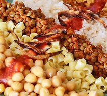
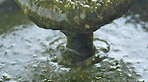
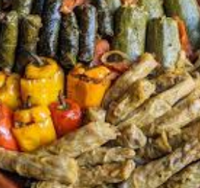

Egyptian Food

Egyptian cuisine is a combination of Mediterranean and Middle Eastern flavors. Traditional dishes include:
- Koshari - A mix of rice, pasta, lentils, and chickpeas topped with tomato sauce and crispy onions. 
- Ful Medames - Cooked fava beans served with olive oil, garlic, and lemon juice.
- Molokhia - A green soup made from jute leaves, served with rice and meat. 
- Mahshi - Vegetables stuffed with rice, herbs, and sometimes meat. 